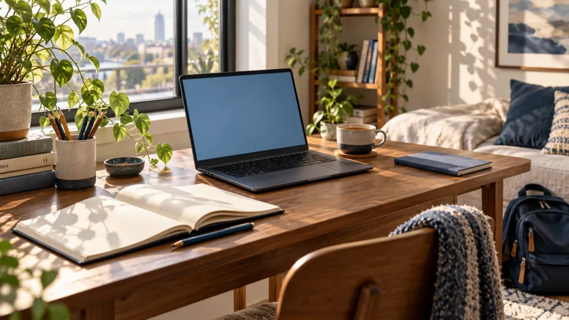
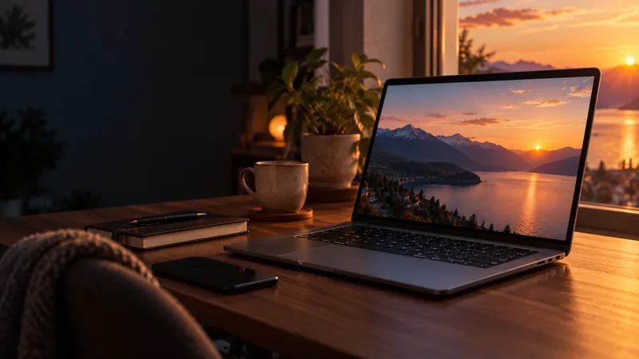
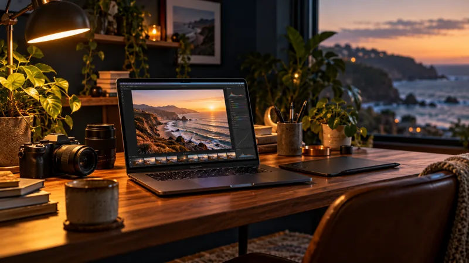
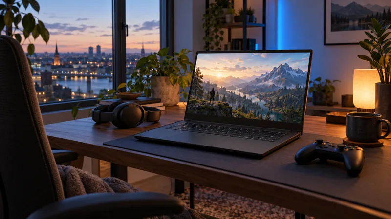

Recommandation en 45 secondes · zéro jargon
Quel PC portable est fait pour vous ?
Pas besoin d’être expert. Ce guide traduit les fiches techniques en dessins et en phrases simples, puis vous propose des modèles selon ce que vous faites vraiment de votre PC, et selon votre budget.
- Sans jargon
- Guide indépendant
- Prix relevés en octobre 2026

7critères expliqués
4questions simples
71modèles repérés
45 spour décider
01 · Ma recommandationQuatre questions, une recommandation
Il n’y a pas de mauvaise réponse. Touchez une carte : la question suivante s’ouvre toute seule, et votre recommandation s’affiche dès la première réponse.
02 · Votre profilVous vous reconnaissez ?
Quatre façons d’utiliser un PC portable. Touchez la vôtre : on pré-remplit le questionnaire et on affiche tout de suite une recommandation.

Étudiant
Cours, notes, recherches, visios. Un PC qui suit partout sans faire mal au dos.
- Priorité
- Poids et autonomie
- On peut économiser sur
- La carte graphique dédiée

Professionnel
Mails, tableaux, visioconférences, vingt onglets ouverts. Il doit rester fluide toute la journée.
- Priorité
- 16 Go de mémoire, écran lisible
- On peut économiser sur
- La puissance graphique

Créateur
Photo, montage vidéo, 3D. Les gros fichiers et les exports ne doivent pas vous faire attendre.
- Priorité
- Processeur, mémoire, écran fidèle
- On peut économiser sur
- Le poids et l’autonomie

Joueur
Des jeux récents, fluides et beaux. Ici, la puissance passe avant le reste.
- Priorité
- Carte graphique et écran rapide
- On peut économiser sur
- Le poids et l’autonomie
03 · L’essentielTrois idées pour ne pas se tromper
Pour comprendre pourquoi on vous recommande ce qu’on vous recommande, voici l’essentiel en trois idées. Le reste de la page détaille chaque critère.
Un bon PC est bon pour quelque chose
Il n’existe pas de « meilleur PC » en général. Un PC de jeu est lourd et vide vite sa batterie ; un PC ultra-léger peine en montage vidéo. Partez de ce que vous en faites, pas de la fiche technique.
16 Go de mémoire, 512 Go de stockage
Le point de départ confortable pour la plupart des gens. En dessous, le PC ralentit vite ; au-dessus, on paie souvent pour rien, sauf en création ou en jeu.
Ne payez pas ce que vous n’utilisez pas
Une carte graphique dédiée ne sert qu’au jeu, à la 3D et au montage vidéo. Pour étudier, écrire ou naviguer, elle ajoute surtout du poids, de la chaleur et du prix.
Au début, vous pouvez ignorer : la fréquence en GHz, les heures d’autonomie annoncées par le fabricant et les mots « gaming » ou « pro » écrits sur la boîte. Ils pèsent bien moins que les trois idées ci-dessus.
Ces trois règles sont détaillées dans les critères, juste après. Voir les critères Vous les avez déjà comprises ? Passez directement au catalogue.
04 · Les critères · facultatifSept critères, une boussole
Vous voulez comprendre pourquoi on vous recommande ce PC ? Explorez les critères : c’est facultatif. Un critère est déjà ouvert pour vous montrer comment ça marche ; touchez les autres au besoin. Les démos comparent des cas types ; les valeurs affichées sont indicatives.
05 · Le piège à éviterMême nom, pas la même machine
06 · CatalogueTous les modèles, à explorer librement
Filtrez par profil et par budget. Chaque modèle reçoit une note sur 10 pour un profil donné : ce n’est pas une note de qualité, un excellent PC de jeu aura une mauvaise note « étudiant ».
Chargement du catalogue…
07 · Questions fréquentesCe que tout le monde se demande
Les réponses courtes aux doutes qui reviennent le plus souvent avant un achat.
8 Go de mémoire, est-ce suffisant ?
Pour écrire, naviguer et regarder des vidéos, oui, mais sans marge : dès que vous ouvrez beaucoup d’onglets et un logiciel en plus, le PC ralentit. 16 Go est le choix serein, surtout si la mémoire est soudée et ne pourra donc jamais être augmentée.
Faut-il une carte graphique dédiée ?
Seulement pour jouer, faire de la 3D ou du montage vidéo exigeant. Pour le reste, la partie graphique intégrée au processeur suffit, et vous gagnez en poids, en autonomie et en prix.
Windows, macOS ou ChromeOS ?
Regardez d’abord vos logiciels et vos autres appareils. Windows offre le plus large choix de machines et de jeux. macOS s’accorde avec l’iPhone et l’iPad. ChromeOS est simple et léger, mais très centré sur le web.
L’autonomie annoncée est-elle réelle ?
Rarement : ces chiffres sont mesurés dans des conditions idéales (écran peu lumineux, tâches légères). La capacité de la batterie, en Wh, donne un repère ; les tests indépendants sont plus fiables que la boîte.
Quel budget prévoir ?
Sous 800 € : bureautique et études légères. De 800 à 1 200 € : un PC polyvalent avec 16 Go et 512 Go. De 1 200 à 1 800 € : un meilleur écran, plus de mémoire ou une carte graphique dédiée. Au-delà : réservé aux besoins exigeants.
Je ne comprends pas la référence d’un PC. Que faire ?
Collez le lien de la fiche dans l’analyseur : il identifie le modèle exact et vous dit s’il convient à votre usage.
Un mot vous échappe ?Le lexique en clair
Les termes qui reviennent le plus souvent sur une fiche produit, expliqués simplement.
Chargement du lexique…
À vous de jouer
45 secondes pour trouver votre PC
Quatre questions, aucune connaissance technique requise. Vous obtenez un profil, un modèle conseillé et une option moins chère.